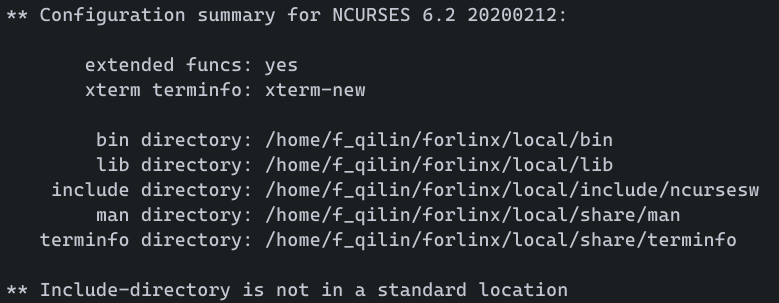
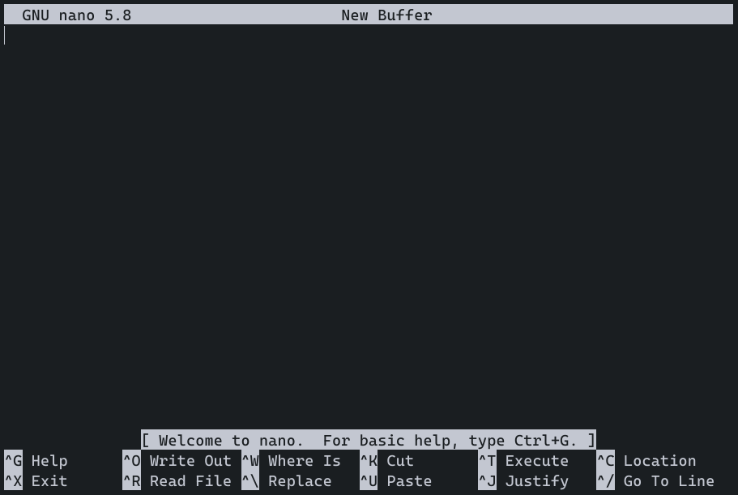

交叉编译GNU nano并在开发板终端运行
FZQ0003
9月 07, 2021
![]()
旧文档翻新：写于2021-08-06。
GNU nano是一个体积小巧而功能强大的文本编辑器。其特点之一为可以直接在终端运行，不需要GUI界面。相比于vim，其对新手较为友好。
编译ncurses
下载源码包(当前版本为6.2)，解压并跳转到源码目录：
wget https://invisible-island.net/datafiles/release/ncurses.tar.gz
tar -zxf ncurses.tar.gz
cd ncurses-6.2/
确认交叉编译器所在目录和安装目录，然后进行配置：
- 这里所用编译器arm-none-linux-gnueabi-*位置在环境变量中，可直接输入到host参数。
- 安装目录在这里选择/home/f_qilin/forlinx/local输入到prefix参数，一般情况下为/usr/local，但在安装时需要root权限。
- 参数：
- –prefix=PREFIX：安装目录，一般为/usr/local。
- –host=HOST：交叉编译器前缀，这里选择arm-none-linux-gnueabi。
- 剩下的输./configure –help查看。
./configure --prefix=/home/f_qilin/forlinx/local --host=arm-none-linux-gnueabi --disable-big-core --disable-stripping --without-manpages --without-tack --without-tests --enable-widec --with-shared
make clean
make
make install


注：
- 注意ncurses版本，如果需要5.x等版本请进行相关配置或者下载5.x源码。
- 在实际运行时可能会出现“Error opening terminal: xxx.”的错误，详见“指定TERMINFO”部分。
编译nano
在编译之前，需要创建一个curses.h的链接，否则会出错：
ln -s ncursesw/curses.h /home/f_qilin/forlinx/local/include/curses.h
其余流程同上(当前版本为5.8)：
cd ..
wget https://www.nano-editor.org/dist/v5/nano-5.8.tar.gz
tar -zxf nano-5.8.tar.gz
cd nano-5.8/
./configure --prefix=/home/f_qilin/forlinx/local --host=arm-none-linux-gnueabi CPPFLAGS=-I/home/f_qilin/forlinx/local/include LDFLAGS=-L/home/f_qilin/forlinx/local/lib
make clean
make
make install
注：
- 如果遇到编译错误，请查看错误信息，然后重新配置。
至此，编译工作全部完成，接下来需要将输出文件转移到开发板中。
转移到开发板
在转移之前，请将输出文件所在目录挂载到开发板中。具体过程不再赘述。
假设/home/f_qilin/forlinx被挂载到/mnt/forlinx。
以下过程在开发板终端操作：
cp -frp /mnt/forlinx/local/* /usr/
注：
- 可能需要花费较长时间，请耐心等待。
- 如果需要烧写等操作，请参考其他教程。复制文件的操作是完全一致的。
完成后，输入nano命令即可运行。

指定TERMINFO
如果出现以下情况：

检查TERM以及TERMINFO：

进行测试：
TERMINFO=/usr/share/terminfo nano
正常运行。可见，缺少TERMINFO变量，需要进行配置。
根据以上结果，只需要配置环境信息即可：
echo "export TERMINFO=/usr/share/terminfo" >> /etc/profile
source /etc/profile